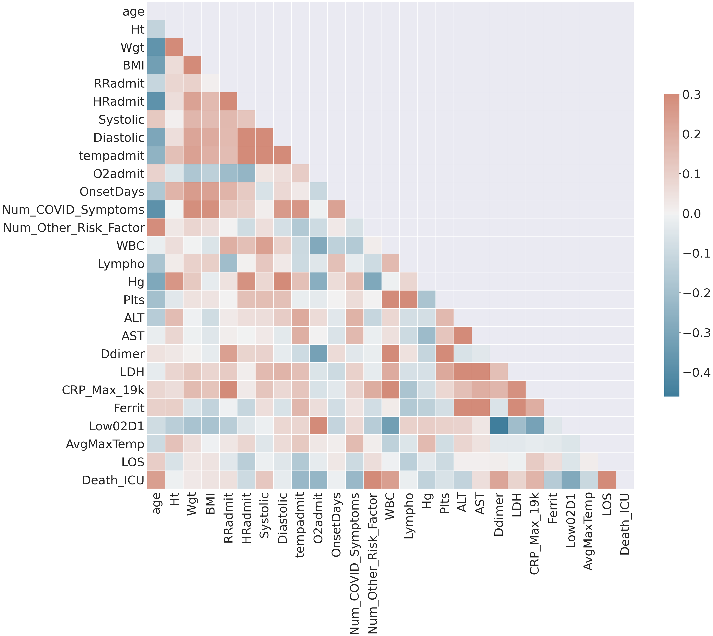
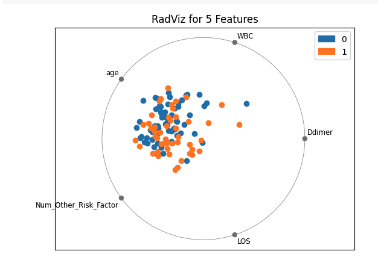
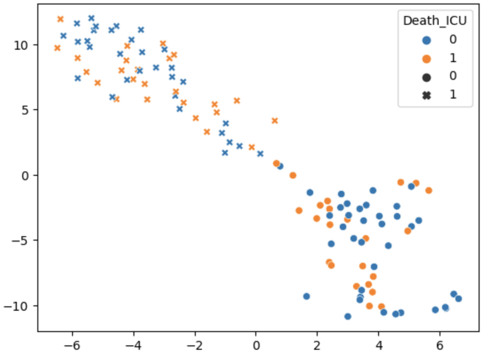
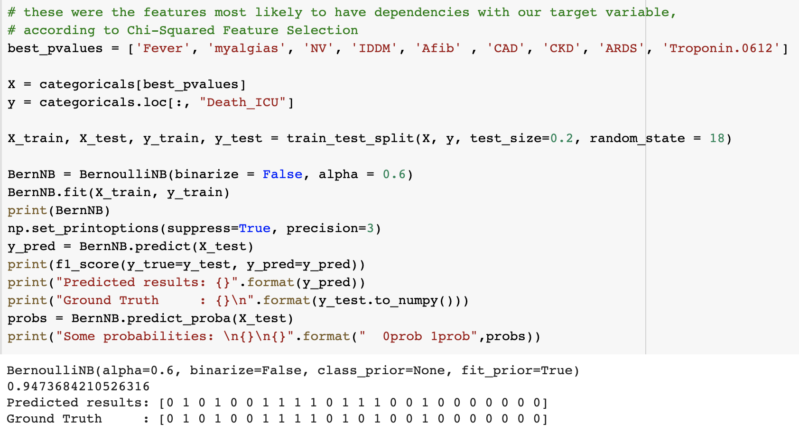
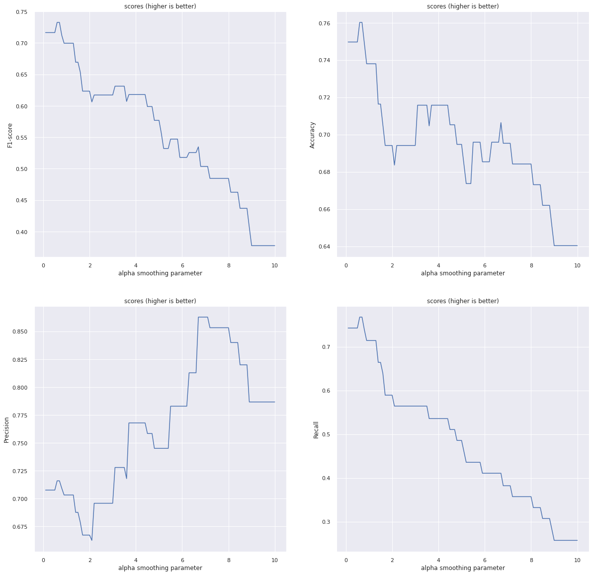

COVID-19 Case Severity Analysis

Introduction
We are going to be analyzing how different factors affect the severity of COVID-19 in an infected patient. We will be looking primarily at pre-existing diseases, as this is theorized to increase the chance of serious illness or even death from coronavirus. In addition, we will also take into account how demographic factors like age, race, sex, and financial status affect the severity. We know that having a pre-existing disease will increase the chance of medical problems related to coronavirus, but we do not know how much each disease affects the severity. We hope this intersection of pre-existing diseases and demographics with severity of illness in COVID-19 patients will lead to insightful information about the virus.
Background
Hospitals have been overcrowded with COVID patients since the pandemic started.
COVID is a deadly virus that has killed over 1 million worldwide and 208,000 people in the United States,
and these numbers will continue to increase.
Too many people are dying, so we need to minimize these deaths as much as possible by prioritizing beds for the most vulnerable.
Our goal is to produce an algorithm that can assign patients a severity level based on factors such as age, sex, race, and pre-existing conditions.
This will help guide the hospitals in determining who to prioritize when there is a shortage of beds.
During the semester, we hope to be able to determine which conditions will leave somebody the
most vulnerable to severe complications or even death, and we hope hospitals can use this information to assign beds to those people,
and in the long run, save lives.
Methods
Unsupervised Learning
In any machine learning task, the Curse of Dimensionality is something that must be dealt with. What this means is that as the dimensionality (or number of features in the dataset) increases, the volume of the feature space in which we're working increases rapidly. As a result of this, it becomes necessary to reduce the dimension into a context that we can more easily work with. By reducing the amount of dimensions/features we have to process, we are able to analyze fewer relationships between features and reduce the computational power needed and the likelihood of overfitting.
Pair Plots
Pair plots are a useful unsupervised visualization for determining pairwise relationships among features in a dataset. Each graph in a pairplot is a scatterplot of data points only considering each pair of features. On the diagonal, a univariate distribution of each feature is shown instead.
We decided to create pairplots for all numerical columns in the dataset, since continuous values can be plotted much more easily on a pairplot than one-hot encoded categorical features.
Correlation Matrix
One of the most important unsupervised techniques we used was creating a correlation matrix of all of our numerical data. This allows us to see which features are most strongly correlated with one another, helping us eliminate redundancy in the future as well as find the columns most strongly correlated with ending up in the ICU or dying.
Principal Component Analysis
A common algorithm in dimensionality reduction is principal component analysis (PCA). We ran principal component analysis on the numerical data that we had; however the results were not very useful to us and we did not pursue the algorithm further. Our project involves determining which features increase the probability of dying or being severely impacted (ICU) by COVID-19, but PCA projects our feature set onto a new basis entirely, which does not allow us to select the most important original features.
t-SNE
t-distributed stochastic neighbor embedding is another dimensionality reduction technique, typically used to provide easy 2D or 3D visualizations of high dimensional data, which is extremely useful for interpreting results visually. It works by constructing a similarity probability distribution for each pair of points using Euclidean distance, then mapping each point into a smaller feature space that best represents the similarity distribution.
K-Means Clustering
We used the k-means clustering algorithm on our data after projecting into a 2D space for visualizations using t-SNE. Since we know our non-target features come from two latent classes (those who ended up in the ICU and those who didn’t), we decided to use 2 clusters and visualize the k-means clusters in the dimensionality reduced data.
Supervised Learning
The point of any machine learning task is to get some actionable results out of the data that we put in, and supervised learning will help us achieve that goal. The main methods being considered are chi-squared feature selection and various naive Bayes classifiers.
Chi-Squared Feature Selection
After conducting unsupervised analysis on the numerical data, we wanted to perform analysis on the qualitative data and determined that the chi-squared test for feature selection would be helpful in figuring out which variables are dependent with whether or not a patient lives or dies. We ran sklearn.feature_selection.chi2 on the data with the “died” feature as the target parameter and plotted the results with the highest chi-squared statistics.
Naive Bayes Classification and Posterior Probability Prediction
Since our ultimate goal is to predict a COVID-19 patient's prognosis, we decided to use a number of variations of Naive Bayes classifiers to predict whether a patient will either die or end up in the ICU. Naive Bayes classifiers use the "naive Bayesian assumption" that all features are conditionally independent given the datapoint's classification; that is to say, all symptoms, preexisting conditions, comorbidities, and demographics are conditionally independent given that we know whether the patient either died or is in the ICU. Using this assumption, we can predict posterior probabilities of belonging to either class label, and use these to classify a testing set. Naive Bayes classifiers are typically used for text classification, but the size of our dataset and types of our features led us to believe that they would be a viable option.
Multinomial Naive Bayes
Multinomial Naive Bayes classifiers are the most commonly used version of naive Bayes classifiers, and they assume that the data is multinomially-distributed. scikit-learn's implementation of the multinomial classifier is intended for use with a "bag of words" representation of text-based data, in which each column represents a word and a datapoint's value in that column represents the number of times that word appears. We chose to test this implementation on the continuous numerical features in our dataset.
Complement Naive Bayes
Complement Naive Bayes classifiers are a modification on multinomial classifiers that are specifically designed to deal with class imbalance; if the probability of a specific ground-truth categorization appearing dominates the probability of other categorizations, then the training set is imbalanced. Multinomial naive Bayes classifiers tend to perform very poorly when trained with imbalanced data because they overrepresent the probability of the more common class appearing in testing data. Since our training data had minor class imbalance, we chose to try using complement naive Bayes as well on our numerical data.
Bernoulli Naive Bayes
Bernoulli Naive Bayes classifiers assume that the data is distributed according to multivariate Bernoulli distributions -- this means that each feature is a boolean-valued feature, where the feature is either present or absent. These classifiers are typically used for text-based classification where each column represents a word, and each datapoint's value in that column is either 0 (indicating the word is absent from the document) or 1 (indicating the word is present). We used this classifier on all of our one-hot encoded, categorical features in our data.
Results
Unsupervised Results
Upon downloading our dataset, which was composed of patient-by-patient data describing things like sex, age, preexisting conditions, and symptoms, the first thing we had to do was make it suitable for machine learning methods in general. This means we had to eliminate columns/features that were extraneous or unrelated to our problem (such as factors which would be unknown at the time of arrival to the hospital and factors which were uniform over all patients). Then, we used pandas to convert our dataset into a dataframe, encoded categorical data into a one-hot format, and normalized data for use in a correlation map. Next, we moved on to performing key unsupervised learning techniques on our dataset, such as visualizations (correlation plots and heatmaps) and clustering (K-means). These techniques provided insight into the structure of our data, what features correlated with others, what we could do to make supervised learning easier, and how the data clustered in its space.
Pairplots

Pairplots showing correlations and relationships between all numerical features and delimited by death/ICU. Orange patients died and/or were in the ICU.
(click for more)

Pairplot detail
What these pair plots showed is not only the relationships of numerical factors with each other, but equally importantly, the univariate distributions of these factors split up based on class. As shown, the distributions can help decide the relative importance of each factor by showing discrepancies between distributions for dead/seriously-affected patients and non-ICU patients. There were a number of pairplots which revealed some insight. For example, the length of stay (LOS) feature, shows that on average, patients who stayed in the hospital longer tended to be more likely to die and/or end up in the ICU.
In addition, we can see extremes in different categories in which almost everyone who had above or below a threshold in a specific category had the same outcome. For example, out of the 9 people who had a Low02D1 value less than 82, 8 of them had a severe case of COVID-19. Similarly, every patient with an O2 level below 80 at hospital admission had a severe case of COVID-19. Also, every patient with a ferritin value of over 4000, avoided both dying and going to the ICU.
Finally, there were a few plots where it appeared a combination of factors resulted in a higher chance of a severe case of COVID-19. Patients with a higher number of ‘Num_Other_Risk_Factors’ were more likely to die and patients who were older (had a higher value in the age feature). In the pair plot between these two categories there was a slight positive relationship between the features.
Correlation Matrix

Correlation for numerical data
We computed correlations only among numeric features, as well as our one target categorical feature, which represents whether a patient ended up in the ICU or died, because correlation plots do not capture relationships between one-hot encoded data very well. Those features with the highest correlation are the most likely to be redundant in some fashion, which can help us perform unsupervised feature selection. For example, notice that systolic blood pressure and diastolic blood pressure have a high correlation, so we may choose to eliminate one or combine them if we need to reduce features. This was also helpful in determining which numeric features are most strongly correlated with dying or having to go to the ICU. For example, age, length of stay (LOS), and D-dimer were all relatively correlated with death and ICU visits.
This visualization was important because it allowed us to see what factors had the most influence or correlation with the latent variables. Because certain factors are more important, we can cut off extraneous factors and create a simpler, faster, more understandable final model without having to record that many attributes of each patient.

RadViz for numerical data
t-SNE & K-Means

Data, t-SNE projected and clustered using k-means.
Shapes represent the two clusters.
Blue are those who died or went to the ICU, while orange did not.
- t-SNE projected the data in such a way that it created "phantom" clusters, which is a common problem when the parameters of the algorithm are off
- The clusters are a result of a different latent categorization instead of being related to death or going to ICU.
Supervised Results
Chi-Squared Feature Selection

Chi-squared statistics by feature. Red bars had p-value < 0.05, indicating dependence between death and the feature.
Classification Metrics
For this project we used a variety of metrics to find the ideal hyperparameters for our model. We primarily measured 4 different metrics for performance: the F1 score, precision, recall, and accuracy. It is important to note that for our classification problem, there were only 2 classes to choose from. Every patient was either in Death_ICU or not in Death_ICU. This means that randomly picking between the two categories could yield an accuracy around 50%. In addition, our dataset had 116 total rows with 48 of them being in the Death_ICU category and 68 not being in Death_ICU. This also means that a classifier that picked every data point as false would be able to get around 58.6% accuracy.
Precision
Precision is a measure of how correctly the returned positives were predicted. In order to calculate the precision, we divide the number of correctly predicted positives by the total number of predicted positives. Maximizing the precision will decrease the number of false positives (actual negatives that were classified as positive) the classifier returns.
Recall
Recall is a measure of how much of the actual positives were returned as positive. To calculate the recall we divide the number of correctly predicted positives by the total number of positives in the dataset. Maximizing the recall will decrease the number of false negatives (actual positives that were classified as negative) the classifier returns.
Accuracy
Accuracy is a measure of the correctness of the classifier. In order to calculate the accuracy, we add the number of correctly predicted positives with the number of correctly predicted negatives and divide that by the total number of rows in the dataset. Since the classes of the dataset were relatively balanced, accuracy might be a more useful metric than in other datasets with very low occurrences of certain classes. In our case, since around 58.6% of entries were false, a trivial solution would yield around that accuracy as a metric.
F1-Score
The F1 score is another way to measure the accuracy of a classifier. F1 combines both precision and recall into one metric. We calculate the F1 score by multiplying our precision and recall together and then multiplying by 2 and then dividing by the sum of our precision and recall. Maximizing the F1 score will reduce both the number of false positives and the number of false negatives the classifier returns. However one downside of the F-score is that it does not take into account the number of True Negatives (actual negatives that were correctly returned as negative).
In a real-world setting, where we are attempting to measure the potential severity of a patient with COVID-19, the number of true negatives is not as important as the number of false positives or the number of false negatives. For example, telling patients who will never need to go to the ICU that they will soon be in the ICU (False Positive) and keeping them in the hospital for continuous monitoring will take away much needed hospital beds from patients who desperately need them. On the other hand, telling patients that will fall severely ill and will soon need to go to the ICU that they are fine (False Negative) and sending them home early will also divert hospital resources from those who need it most. For this reason, we decided to focus primarily on maximizing the F1-score which accounts for both False Positives and False Negatives.
Naive Bayes Classifiers
Bernoulli Naive Bayes
After utilizing the Bernoulli Naive Bayes classifier technique for the categorical data, we were able to maximize the effectiveness of the model when making the test_size parameter equal to 0.2. After tuning the hyperparameters, we were able to produce a classifier model using categorical features that had an f-measure of 0.78.
We also tried Bernoulli Naive Bayes using just the features that the chi-square feature selection method found to be significant (having a p-value less than 0.05). We were able to increase the f-measure by over 15%, from 0.78 to 0.95, using the chi-square pruning technique. This was the highest f-measure produced of all the Naive Bayes techniques.

Results from best Bernoulli Naive Bayes model
Complement Naive Bayes
The Complement Naive Bayes method was designed to minimize the effects of class imbalance by comparing the probabilities
of not belonging to certain classes rather than comparing probabilities of belonging to one certain class.
After utilizing the Complement Naive Bayes classifier technique for the numerical data, we were able to maximize the accuracy of the model using a test_size value of 0.2. We were able to achieve an f-measure of 0.800 after tuning the hyperparameters.
The Complement Naive Bayes was not chosen as our final classifier since our data was already relatively balanced.
Multinomial Naive Bayes
We also tried utilizing the Multinomial Naive Bayes classifier for the numerical data. Unfortunately, we did not have as much success in creating an effective model using this classifier technique. We were only able to reach an f-measure of 0.737 using this method. Because Multinomial Naive Bayes was designed to work with large counts of data (such as word occurrences in text), this method was not as suitable for the one-hot encoded data present in our dataset.
Hyperparameter Tuning
In any machine learning model, there are parameters of the model that programmers can use in order to
adjust the performance and efficiency of models.
These parameters act as a design choice and allow modelers to push models towards optimal architectures.
Familiar examples of these include the number of degrees to use in a linear model, the maximum depth of a decision tree,
and the number of layers in a neural network.
Because the Naive Bayes model is so simple, the sklearn library only provides one parameter: alpha.
This parameter denotes the amount of additive smoothing
present in the model,
where additive smoothing is essentially a small value added to probability calculations such that
values of zero for certain probabilities don't turn an entire posterior probability into zero.
sklearn provides the GridSearchCV object as a way to exhaustively try all values of certain parameters
(defined via a python dict), and score each parameter value based on cross-validation metrics:

Various scoring metrics graphed with respect to values of alpha. (click for more)
Owing to the lightweight nature of our model, this search was able to be run on 100 different values of alpha for four
different scoring metrics.
As a result of this search, we determined that the optimal value for alpha was 0.6 in our case,
with each metric giving generally similar results.
An interesting result from this exploration, however, was that higher values of alpha seemed to yield better results
solely in the case of precision (although this increase in precision was smaller in comparison to the
decrease in other metrics had we used this higher value of alpha).
What's also interesting to note is that there are many "plateaus" in the hyperparameter scores,
meaning that certain value ranges of alpha yielded the same score.
This result is hypothesized to be due to the small size of our dataset.
Finally, it's important to note that while hyperparameter tuning is powerful for optimizing a model,
other overarching changes to the model might bring even greater improvements to the model's performance.
In fact, while the more general cross-validation testing scheme of our GridSearchCV method yielded results
that showed changes in the mean scores across various folds,
other less-robust metrics (like using one specific train-test split) often yielded
no change in performance from the default alpha value.
Fortunately, another overarching change (feature selection) improved our model's performance significantly,
which will be discussed later.
Feature Selection:
Using the results of the Chi-squared tests allowed the model to increase the F1 score from 0.78 to 0.95,
which provides an extremely significant increase in performances.
By limiting the features to ones that were most significant with respect to Death_ICU,
the model was able to eliminate noise in the dataset, increase performance, and be generally more lightweight.
Discussion
Predicting risk based on demographic information, medical background, and behavior can provide extremely valuable insight into how the COVID-19 pandemic should best be handled. At the institutional level, hospitals can use our risk predictions to determine how to most efficiently allocate the limited resources in order to minimize deaths and complications. Hospitals will be able to make well-informed, data-driven decisions for how to treat patients and what to be the most wary of. Moreover, risk prediction and a strong understanding of what factors contribute the most to COVID-19 severity can also be informative for the individual. An individual may engage in more extensive prevention behaviors if they are able to predict the severity of their illness or the illnesses of their loved ones. Additionally, as a society, we can identify those individuals who are most at risk, and take extra precautions to protect them from the virus. We hope that this increase in information will drive progress toward ending the pandemic.
References
- A. I. F. AI, “COVID-19 Open Research Dataset Challenge (CORD-19),” Kaggle, 28-Sep-2020. [Online]. Available: https://www.kaggle.com/allen-institute-for-ai/CORD-19-research-challenge/tasks?taskId=558. [Accessed: 02-Oct-2020].
- “CDC COVID Data Tracker,” Centers for Disease Control and Prevention, 2020. [Online]. Available: https://covid.cdc.gov/covid-data-tracker/?CDC_AA_refVal=https%3A%2F%2Fwww.cdc.gov%2Fcoronavirus%2F2019-ncov%2Fcases-updates%2Fcases-in-us.html. [Accessed: 02-Oct-2020].
- J. Turcotte, “Replication Data for: Risk Factors for Severe Illness in Hospitalized Covid-19 Patients at a Regional Hospital,” Harvard Dataverse, 22-Jul-2020. [Online]. Available: https://dataverse.harvard.edu/dataset.xhtml?persistentId=doi%3A10.7910%2FDVN%2FN2WZNK. [Accessed: 02-Oct-2020].